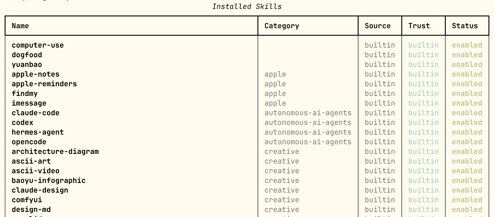

Hermes Agent 技能（Skills）
如果说记忆系统让 Hermes 记住了你是谁，那么技能（Skills）系统让 Hermes 记住了怎么做事。
Skills（技能）是 Hermes Agent 的程序化记忆。
Skills 允许智能体从经验中创建可重用的工作流程，并在未来的会话中复用。
Skills 系统是 Hermes Agent 的核心差异化特性——它是唯一内置学习循环的智能体，能够创建技能、在使用中改进技能，并在会话之间保持知识。
技能是什么
Skills 是一组定义智能体行为的指令和工具，它们可以：
- 自动化工作流程— 封装常见任务模式
- 跨会话学习— 保存和复用成功的解决方案
- 与社区共享— 发布和安装他人创建的技能
- 自我改进— 在使用中不断完善
更多内容参考 Skills 教程：https://www.runoob.com/ai-agent/skills-agent.html。
技能 vs 记忆
| 对比维度 | 技能（Skills） | 记忆（Memory） |
|---|---|---|
| 内容类型 | 操作流程、工作方法 | 环境事实、用户偏好 |
| 加载时机 | 按需，用到时才加载 | 每次会话自动注入 |
| 文件大小 | 可以很大（几百行） | 应保持精简（关键事实） |
| Token 消耗 | 未加载时零消耗 | 每次会话固定消耗 |
| 创建者 | 你、Agent 或从 Hub 安装 | Agent 根据对话自动创建 |
| 典型示例 | 如何部署到 Kubernetes | 用户住在上海，偏好简洁回复 |
经验法则：如果你会把它写进参考文档，它就是技能；如果你会把它贴在便利贴上，它就是记忆。
技能目录结构
所有技能都存放在~/.hermes/skills/目录——这是唯一的数据源。
初次安装时，内置技能会从仓库复制到此目录。通过 Hub 安装的技能和 Agent 自动创建的技能也保存在这里。
~/.hermes/skills/ ├── mlops/ # 分类目录 │ ├── axolotl/ │ │ ├── SKILL.md # 主指令文件（必须） │ │ ├── references/ # 补充文档（按需加载） │ │ ├── templates/ # 输出模板 │ │ ├── scripts/ # 辅助脚本 │ │ └── assets/ # 附属资源 │ └── vllm/ │ └── SKILL.md ├── devops/ │ └── deploy-k8s/ # Agent 自动创建的技能 │ ├── SKILL.md │ └── references/ ├── .hub/ # Skills Hub 状态 │ ├── lock.json │ ├── quarantine/ # 安全隔离区 │ └── audit.log └── .bundled_manifest # 记录内置技能版本
每个技能目录的必须文件只有SKILL.md，其余子目录都是可选的。
Agent 可以修改或删除任何技能——无论是内置的、从 Hub 安装的，还是自己创建的。
渐进式披露：Token 高效加载机制
技能系统最聪明的设计之一是渐进式披露——Agent 不会一次性把所有技能内容塞进上下文，而是分三层按需加载。
Level 0: skills_list() → [{name, description, category}, ...]
会话启动时加载，约 3,000 tokens
↓ 只有需要用某个技能时，才继续
Level 1: skill_view(name) → 完整 SKILL.md 内容 + 元数据
↓ 只有需要参考文档时，才继续
Level 2: skill_view(name, path) → 技能内的特定 references/ 文件
这个设计的实际意义非常直接：
- 你安装了 50 个技能，但本次会话只用了 1 个——只有那 1 个的完整内容会占用 Token
- Level 0 的技能列表（约 3,000 tokens）在每次会话启动时固定加载，让 Agent 知道有哪些技能可以用
- 其余内容在 Agent 判断需要时才加载，不用不花
渐进式披露是技能系统区别于把所有文档塞进系统提示词的关键设计。它保证了技能数量可以无限增长，而每次会话的 Token 成本基本恒定。
内置技能一览
Hermes 安装时自带大量内置技能，可以直接使用。
命令行中启动 hermes：
hermes
使用 以下命令查看技能相关命令：
/skills

以下命令可以在会话中查看所有技能:
/skills browse
hermes 直接在命令行中查看:
hermes skills list

桌面版直接点击左侧的技能与工具菜单查看：

技能分类
内置技能按功能分类存放在子目录中：
| 分类目录 | 包含技能类型 |
|---|---|
| software-development/ | GitHub PR、代码审查、测试驱动开发 |
| research/ | arXiv 论文搜索、网页研究 |
| productivity/ | OCR 文档、ASCII 艺术、计划生成 |
| mlops/ | Axolotl 微调、vLLM 部署、Flash Attention |
| creative/ | 写作、图表（Excalidraw） |
| devops/ | Kubernetes、云部署 |
可选技能（不默认安装）
可选技能随 hermes-agent 一起发布，存放在optional-skills/下，但默认不激活，需要显式安装。
这类技能通常需要额外依赖或是小众用途：
实例
hermes skills install official/blockchain/solana
hermes skills install official/mlops/flash-attention
# 浏览所有可选技能
hermes skills browse
使用技能
技能有两种触发方式：斜杠命令直接调用和自然语言自动触发。
斜杠命令直接调用
每个已安装的技能都自动成为一个斜杠命令。
在任何平台（CLI、Telegram、Discord 等）中直接使用：
实例
/ascii-art 生成一个写着"Hello World"的横幅
/plan 设计一个待办事项应用的 REST API
/github-pr-workflow 为认证模块重构创建一个 PR
# 只输入技能名（不附加任务）——让 Agent 询问你需要什么
/excalidraw
内置的plan技能是个好例子：运行/plan [请求]后，技能指令会告诉 Hermes 先检查上下文，再生成 Markdown 格式的实现计划并保存到.hermes/plans/，而不是直接执行任务。
自然语言触发
也可以通过自然对话触发技能，Hermes 会通过skill_view工具自动加载：
实例
帮我在 arXiv 上搜索关于 diffusion model 的最新论文
Agent 会识别出需要arxiv技能，自动加载后执行。
关键字搜索技能
实例
/skills search docker
/skills search 音乐
# 命令行搜索
hermes skills search deployment
从 Hub 安装技能
除了内置技能，你还可以从 agentskills.io 社区 Hub 安装第三方技能。
命令行安装
实例
hermes skills install official/research/arxiv
hermes skills install official/creative/songwriting-and-ai-music
# 在会话中安装
/skills install official/creative/songwriting-and-ai-music
# 直接从 URL 安装（任何公开的 SKILL.md 文件）
hermes skills install https://sharethis.chat/SKILL.md
# 安装并自定义名称
hermes skills install https://example.com/SKILL.md --name my-skill
安装后发生了什么：
- 技能目录被复制到
~/.hermes/skills/ - 出现在
skills_list输出中 - 可以作为斜杠命令使用
已安装的技能在新会话中生效。如果想在当前会话立即使用，用 /reset 开启新会话，或加 --now 参数立即刷新提示缓存（会多消耗一些 Token）。
验证安装
实例
hermes skills list | grep arxiv
# 或在会话中验证
/skills search arxiv
从 GitHub 仓库添加技能源
实例
hermes skills tap add github.com/username/my-skills-repo
# 之后可以安装仓库中的技能
hermes skills install username/my-workflow
/learn 命令：一键从源生成技能
/learn是将你已知的东西——或一堆参考资料——快速转化为可复用技能的捷径，无需手写 SKILL.md。
它是开放式的：指向任何你能描述的内容，Agent 用它已有的工具收集材料，然后按照标准创作规范生成技能。
实例
/learn ~/projects/acme-sdk 中的 REST 客户端，重点关注认证和分页
# 从在线文档页面学习（用 web_extract 获取）
/learn https://docs.example.com/api/quickstart
# 从你刚刚完成的工作流程学习
/learn 我刚才部署 staging 服务器的步骤
# 从粘贴的笔记或描述的流程学习
/learn 报销流程：打开门户，新建费用报告，附上收据，提交
/learn 的工作原理
整个过程分为三步：
- Agent 使用已有工具收集源材料（读取文件、抓取网页、分析当前对话）
- 按照官方 Skill 创作标准起草 SKILL.md（含 ≤60 字符描述、标准章节顺序、Hermes 工具框架、不编造命令）
- 通过
skill_manage工具保存——如果开启了write_approval，会先请求审批
/learn 在 CLI、消息网关、TUI 和 Dashboard 中均可使用，行为完全一致。Dashboard 的 Skills 页面还提供了图形化的Learn a skill面板，包含目录、URL 和自由文本三个输入框。
Agent 自动创建技能
这是 Hermes 技能系统最独特的部分：Hermes 通过将可复用的流程保存为技能来从经验中学习。
当它解决了一个复杂问题、发现了一个工作流程或被纠正后，它可以将这些知识持久化为技能文档，在未来的会话中加载。
技能随时间积累，让 Agent 越来越擅长处理你的特定任务和环境。
触发时机
完成一个复杂任务（通常涉及 5 步以上工具调用）后，Hermes 可能主动提议：
我注意到我们刚才走完了一个完整的 Docker 多阶段构建流程。 要不要我把这个工作流程保存为技能，下次可以直接复用？
手动要求 Agent 创建技能
你也可以在任何时候主动要求：
实例
把我们刚才的 K8s 部署流程保存为技能
# 学习项目规范并保存为技能
学习一下我们这个项目的 Git 提交规范，保存成技能
控制技能写入权限
默认情况下 Agent 可以自由创建和修改技能。
开启审批模式后，Agent 每次要创建或修改技能时会先请求你的确认：
实例
# 开启技能写入审批
skills:
write_approval: true # 默认 false
开启 write_approval 后，你可以预览 Agent 要写入的技能内容再决定是否批准。这是一个重要的安全边界——技能文件无签名溯源信息，无法区分Agent 自己写的和手动放入目录的。
SKILL.md 格式详解
技能就是带有 YAML 前置元数据的 Markdown 文件。
以下是完整格式规范，包含所有可选和必填字段：
实例
name: my-skill-name # 小写字母和连字符，≤64 字符（必须）
description: 当用户需要 <触发条件> 时使用。<一行行为描述>。
≤1024 字符（必须）
version: 1.0.0
author: 你的名字
license: MIT
platforms: [macos, linux] # 可选——限制操作系统
metadata:
hermes:
tags: [python, automation, devops]
category: devops
related_skills: [other-skill, another-skill]
fallback_for_toolsets: [web] # 可选——条件激活
requires_toolsets: [terminal] # 可选——条件激活
config: # 可选——声明需要的配置项
- key: myskill.api_key
description: "API Key 描述"
default: ""
prompt: "请输入 API Key"
required_environment_variables: # 可选——声明需要的环境变量
- name: TENOR_API_KEY
prompt: Tenor API Key
help: 从 https://developers.google.com/tenor 获取
required_for: GIF 搜索功能
---
# 技能标题
## When to Use
- 触发条件列表
- 反向条件（什么时候不用这个技能）
## Procedure
1. 第一步
2. 第二步
3. 如需 API 文档，加载参考：skill_view("my-skill", "references/api-docs.md")
## Pitfalls
- 已知失败模式：[描述]。解决方法：[方案]
- 注意边界情况：[说明]
## Verification
运行 check-command 验证结果是否正确。
字段限制
| 字段 | 限制 | 说明 |
|---|---|---|
| name | ≤64 字符 | 小写字母和连字符 |
| description | ≤1024 字符 | 技能选择的关键依据，Agent 据此判断是否加载 |
| 整个 SKILL.md | ≤100,000 字符（约 36k tokens） | 超过 20k 建议拆分到 references/ |
条件激活：智能显隐机制
技能可以根据当前会话中可用的工具自动显示或隐藏，无需手动管理。
这在多环境部署中非常实用——同一个技能列表在不同环境中自动适配。
实例
metadata:
hermes:
fallback_for_toolsets: [web] # 当 web 工具集不可用时才显示
requires_toolsets: [terminal] # 只有 terminal 工具集可用时才显示
fallback_for_tools: [web_search] # 当 web_search 工具不可用时才显示
requires_tools: [terminal] # 只有 terminal 工具可用时才显示
| 字段 | 行为 |
|---|---|
| fallback_for_toolsets | 列出的工具集可用时隐藏，不可用时显示 |
| requires_toolsets | 列出的工具集可用时显示，不可用时隐藏 |
| fallback_for_tools | 同上，但针对具体工具而非工具集 |
| requires_tools | 同上，但针对具体工具 |
实际案例：内置的duckduckgo-search技能使用了fallback_for_toolsets: [web]。
当你配置了 Firecrawl API Key（web 工具集可用）时，这个技能自动隐藏，Agent 直接使用web_search。
当 API Key 缺失（web 工具集不可用）时，DuckDuckGo 技能自动浮现作为备用方案。
技能包（Skill Bundle）：组合加载
技能包是将多个技能组合在一个斜杠命令下的 YAML 文件。
运行/<bundle-name>时，包中列出的所有技能同时加载——适用于某项任务总是需要同一套技能的场景。
创建技能包
实例
hermes bundles create backend-dev \
--skill github-code-review \
--skill test-driven-development \
--skill github-pr-workflow \
-d "后端功能开发——代码审查、测试、PR 工作流"
使用时：
实例
/backend-dev 重构认证中间件
Agent 会同时加载三个技能，并将重构认证中间件作为用户指令附加进来。
技能包文件格式
技能包存放在~/.hermes/skill-bundles/<slug>.yaml：
实例
name: backend-dev
description: 后端功能开发——代码审查、测试、PR 工作流
skills:
- github-code-review
- test-driven-development
- github-pr-workflow
平台级技能管理
不同平台可以启用不同的技能子集。
例如，开发相关的技能没必要在 Telegram 上出现：
实例
hermes skills config
这会打开一个交互式 TUI，让你在每个平台（CLI、Telegram、Discord 等）上分别启用或禁用技能。
手动创建技能：五分钟上手
技能只是带有 YAML 前置元数据的 Markdown 文件。
创建一个技能只需不到五分钟，无需注册，放入~/.hermes/skills/即可使用。
步骤一：创建目录
实例
mkdir -p ~/.hermes/skills/my-category/my-skill
步骤二：写 SKILL.md
实例
name: fly-deploy
description: 将 Python 应用部署到 Fly.io，包含环境变量和持久卷配置。
version: 1.0.0
metadata:
hermes:
tags: [python, deployment, fly.io]
category: devops
requires_toolsets: [terminal]
---
# 部署 Python 应用到 Fly.io
## When to Use
- 用户需要将 Python 应用（Flask/FastAPI/Django）部署到 Fly.io
- 需要配置环境变量或 Volume 持久化存储
- 不用于：非 Python 应用，或使用其他云平台
## Procedure
1. 检查 fly CLI 是否安装：fly version
2. 登录 Fly：fly auth login
3. 在项目根目录初始化：fly launch
4. 配置 fly.toml（检查 [build] 和 [http_service] 部分）
5. 设置必要的 Secret：fly secrets set KEY=VALUE
6. 部署：fly deploy
7. 检查日志：fly logs
## Pitfalls
- fly launch 会自动检测 Python 应用并生成 Dockerfile，
大多数情况下无需手动编写
- 环境变量通过 fly secrets set 而不是 .env 文件设置
（.env 不会上传）
- 免费计划每月有机器运行时限，长期运行的应用建议升级
## Verification
fly status # 检查应用状态
fly open # 在浏览器中打开应用
步骤三（可选）：添加参考文件
实例
mkdir -p ~/.hermes/skills/my-category/my-skill/references
# 把 API 文档、示例等放入 references/
# 在 SKILL.md 中这样引用：
# 如需详细 API 参数，加载参考文档：
# skill_view("fly-deploy", "references/fly-toml-reference.md")
步骤四：测试
实例
hermes chat -q "/fly-deploy 帮我部署这个 FastAPI 应用"
技能的安全注意事项
写入审批门控
技能文件无签名溯源信息——无法区分Agent 自己写的和手动放入目录的。
写入审批机制与pending/目录管理是关键的安全边界。
开启审批后，write_approval: true会让所有技能写入操作（包括 Agent 发起的自动创建）暂存为待审批状态，你审核后再决定是否允许写入。
安全扫描
技能内容在加载前会经过威胁扫描，检测提示词注入、后门安装指令等恶意模式。
匹配到威胁模式的内容会被替换为[BLOCKED: ...]占位符，阻止其到达模型——文件本身不会被删除，只有威胁内容被屏蔽。
从 Hub 安装时的注意事项
| 来源类型 | 风险等级 | 建议 |
|---|---|---|
| 官方内置技能（official/ 前缀） | 低 | 来自 Hermes 仓库，经过审核，可直接安装 |
| 社区技能（URL 或第三方注册表） | 中 | 安装前用 hermes skills inspect 预览内容 |
| .hub/quarantine/ 中的技能 | 高 | 已被隔离的可疑技能，不建议安装 |
实例
hermes skills inspect https://example.com/SKILL.md
技能更新与维护
检查与更新
实例
hermes skills check
# 更新所有可更新的技能
hermes skills update
# 更新特定技能
hermes skills update arxiv
重置内置技能
如果你修改了内置技能想恢复原版：
实例
hermes skills reset google-workspace
# 完整恢复：删除当前文件，重新复制内置版本
hermes skills reset google-workspace --restore
卸载 Hub 技能
实例
hermes skills uninstall my-hub-skill
卸载只能移除通过 Hub 安装的技能，内置技能无法卸载（但可以通过 hermes skills opt-out 停止接收更新）。
发布技能到 Skills Hub
如果你创建了一个有价值的技能，可以发布到 agentskills.io 与社区共享：
实例
hermes skills publish ~/.hermes/skills/devops/fly-deploy
# 在 Hub 中查看你发布的技能
hermes skills list --mine
Blueprint：技能 + 定时任务
技能可以声明调度计划，变成一个可共享的自动化蓝图：
实例
metadata:
hermes:
tags: [blueprint, email]
blueprint:
schedule: "0 8 * * *" # 每天早上 8 点（Cron 表达式）
description: "每日邮件摘要"
安装了这个技能后，运行/suggestions可以看到 Hermes 自动提议创建对应的定时任务：
实例
/suggestions
# 接受建议，创建 Cron 任务
/suggestions accept 1
# 忽略建议（不再重复提示）
/suggestions dismiss 1
# 查看官方精选自动化模板
/suggestions catalog
外部技能目录
如果你在 Hermes 之外维护技能——例如多个 AI 工具共享的~/.agents/skills/目录——可以让 Hermes 同时扫描这些目录。
实例
# 配置外部技能目录
skills:
external_dirs:
- ~/.agents/skills
- /home/shared/team-skills
- ${SKILLS_REPO}/skills
路径支持~展开和${VAR}环境变量替换。
重要规则：
- 本地目录（
~/.hermes/skills/）优先——同名技能时，本地版本覆盖外部版本 - 外部目录不是写保护边界：如果 Hermes 进程有写入权限，Agent 可以修改外部目录中的技能
常用命令速查
实例
hermes skills list # 列出所有技能
hermes skills search <关键词> # 搜索本地和 Hub 技能
hermes skills browse # 浏览官方可选技能
# ─── 安装技能 ───────────────────────────────────────────────
hermes skills install official/<类别>/<名称> # 安装官方可选技能
hermes skills install https://...SKILL.md # 从 URL 安装
hermes skills tap add github.com/user/repo # 添加 GitHub 技能源
# ─── 技能信息 ───────────────────────────────────────────────
hermes skills inspect <id> # 预览（安装前检查）
hermes skills check # 检查更新
hermes skills config # 每平台启用/禁用配置（TUI）
# ─── 更新与维护 ─────────────────────────────────────────────
hermes skills update # 更新所有技能
hermes skills update <name> # 更新特定技能
hermes skills reset <name> # 重置到初始状态
hermes skills reset <name> --restore # 完整恢复内置版本
hermes skills uninstall <name> # 卸载 Hub 技能
# ─── 发布 ────────────────────────────────────────────────────
hermes skills publish <path> # 发布到注册表
# ─── 技能包 ──────────────────────────────────────────────────
hermes bundles create <name> --skill <s1> --skill <s2> -d "描述"
hermes bundles list
hermes bundles delete <name>
# ─── 会话内斜杠命令 ──────────────────────────────────────────
/skills # 列出所有技能
/skills search <关键词> # 搜索技能
/skills browse # 浏览可选技能
/skills install <id> # 安装技能
/<skill-name> [任务描述] # 直接使用技能
/learn <来源描述或 URL> # 从来源生成技能
/suggestions # 查看 Agent 的自动化建议 # 查看 Agent 的自动化建议
创建自定义技能
技能存储在~/.hermes/skills/目录中。每个技能是一个包含skill.md的目录：
~/.hermes/skills/
└── my-custom-skill/
└── skill.md
技能格式
--- name: my-custom-skill description: 一个有用的技能描述 version: 1.0.0 author: your-username tags: [utility, example] --- # 技能指令 您是一个专业的[角色]，擅长[领域]... ## 核心能力 1. 能力 A 2. 能力 B 3. 能力 C ## 使用示例 ### 示例 1 [描述] ### 示例 2 [描述]
技能元数据
| 字段 | 说明 | 必需 |
|---|---|---|
| name | 技能名称（唯一标识符） | 是 |
| description | 技能描述 | 是 |
| version | 语义版本 | 否 |
| author | 技能作者 | 否 |
| tags | 分类标签数组 | 否 |
技能命令参考
| 命令 | 说明 |
|---|---|
hermes skills list |
列出所有已安装的技能 |
hermes skills search <query> |
搜索可用的技能 |
hermes skills install <skill> |
安装技能 |
hermes skills uninstall <skill> |
卸载技能 |
hermes skills create <name> |
创建新技能 |
hermes skills update <skill> |
更新技能 |
点我分享笔记
<p style="font-size:14px;">笔记需要是本篇文章的内容扩展！</p><br> <p style="font-size:12px;"><a href="../tougao.html" target="_blank">文章投稿，可点击这里</a></p> <p style="font-size:14px;"><a href="../w3cnote/runoob-user-test-intro.html" target="_blank">注册邀请码获取方式</a></p> <h3 class="text-muted"><i class="fa fa-info-circle" aria-hidden="true"></i> 分享笔记前必须<a href=";.html" class="runoob-pop">登录</a>！</h3> <p><a href="../w3cnote/runoob-user-test-intro.html" target="_blank">注册邀请码获取方式</a></p>